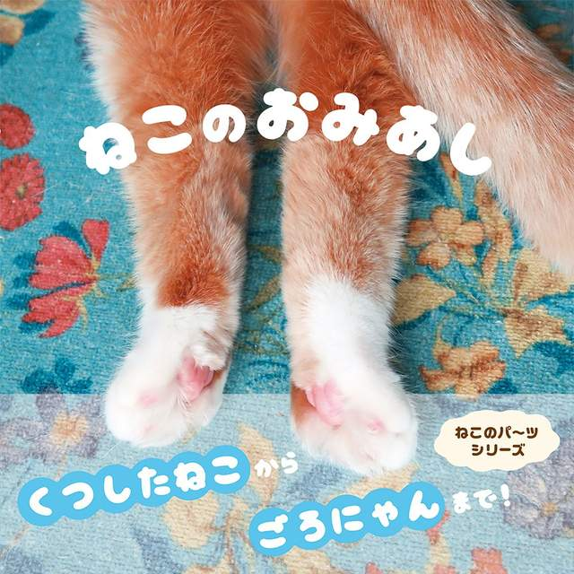
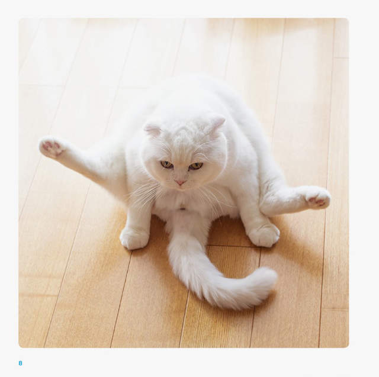
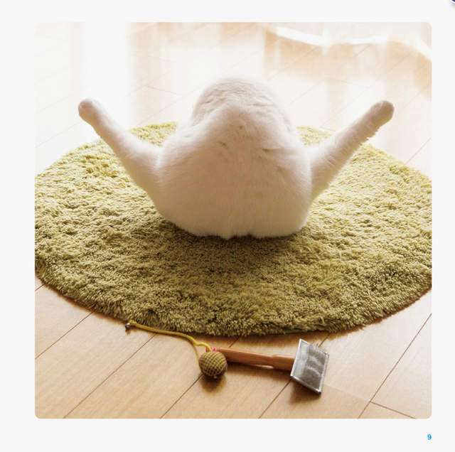
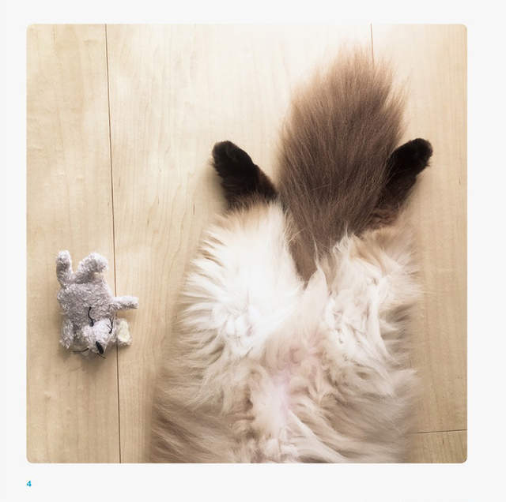
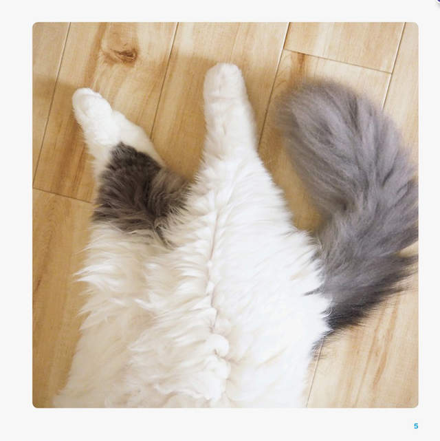
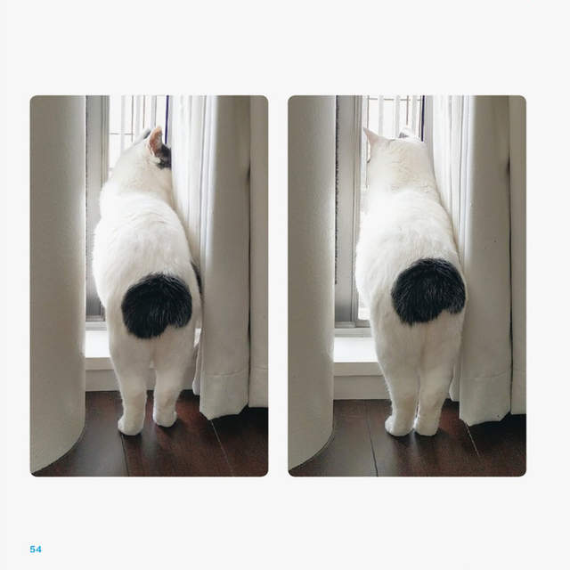

《貓後腳寫真集》寫喵部位的毛呼呼寫真集
2017.09.21 WIME特派員 如夢
相信對於所有飼主來說一定有特別偏好牠們身上的某個部位吧？

每天跟家裡的毛小孩相處在一起，相信對於所有飼主來說一定有特別偏好牠們身上的某個部位吧？像如夢也特別喜歡手手（前腳）輕輕摸有Q彈肉墊、拿起來聞還有動物特有讓人想一聞再聞的氣味(*´∀`)~♥或許正因為毛孩身體的每個部位都充滿魅力，今年1月時PIE International（パイ インターナショナル）就出版了那麼本完全特寫前腳的《貓手手寫真集》在貓奴間大大引起注目，而最近又即將在11月10日推出第二彈以貓後腳為主題的寫真集《ねこのおみあし》。

不同於被我們人類擅自當作手手的前腳，看似魅力容易被忽略的後腳，其實也是讓貓咪走路保持輕聲優雅的關鍵。而這本完全特寫貓後腳的寫真集中，就以貓咪各種不同的姿勢、角度來強調後腳不輸給手手的可愛。


▼即使短短也一樣可愛的後腳❤


▼貓咪睡著時那伸直的後腳，意外是容易被忽略的盲點呢。


▼從屁屁一路延伸到後腳的線條，莫名有種性感的風味（咦）


感覺全身上下都出過寫真集的喵星人，到底還剩哪個部位沒被特寫成寫真集的咧？
留個言吧~